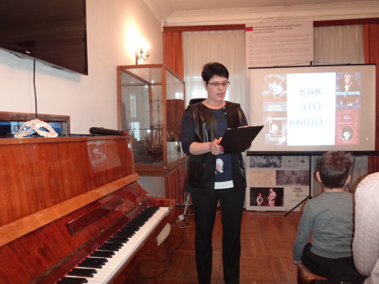
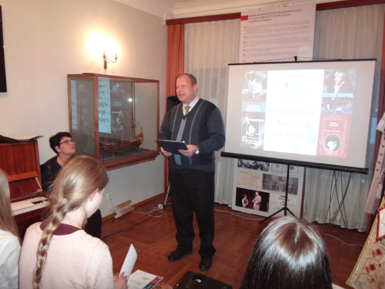
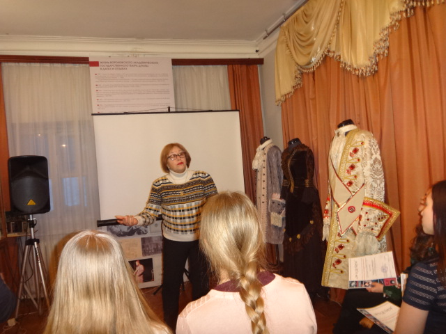

«Я научила женщин говорить…»
01.03.2018
1 марта 2018 г. в 16 30 в Воронежском областном литературном Музее им И.С.Никитина прошел вечер поэзии и музыки «Я научила женщин говорить…».
Состоялось награждение номинантов конкурса, в котором приняли участие Высоцкая Наталья Валерьевна, член оргкомитета конкурса «Я научила женщин говорить…», заместитель директора по научно-методической работе МБУ ДО ЦРТД и Ю г. Воронежа, а также члены жюри конкурса:
-
Дубровина Елена Васильевна, филолог, писатель, кандидат в члены Воронежской городской общественной организации «Союз писателей «Воинское содружество», поэт г. Воронеж.
-
Кашкин Сергей Николаевич, к.п.н., член-корр. МОО «Петровская академия наук и искусств», председатель правления Воронежской городской общественной организации «Союз писателей «Воинское содружество», поэт и прозаик г. Воронеж.
-
Костенко Ольга Борисовна, член «Союза Журналистов России», член Воронежской городской общественной организации «Союз писателей «Воинское содружество», поэт-бард г. Воронеж.
-
Партолина Тамара Николаевна, член Воронежской городской общественной организации «Союз писателей «Воинское содружество», поэт-песенник г. Воронеж.


